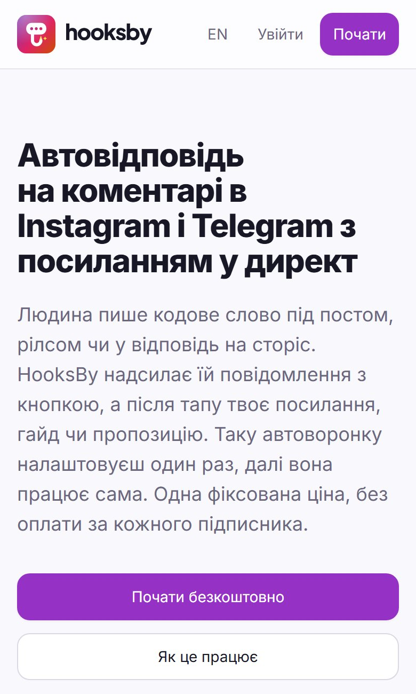
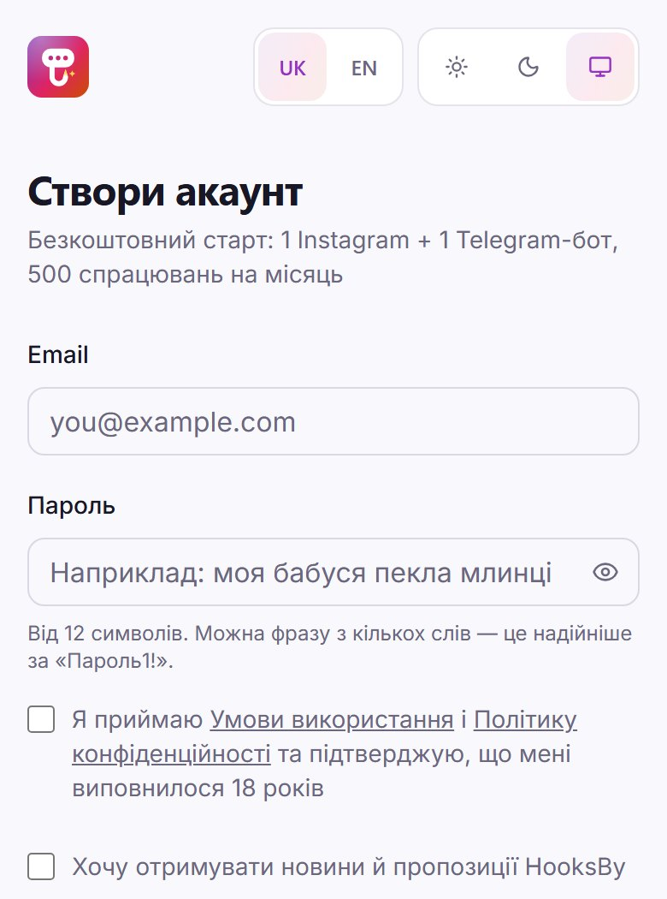
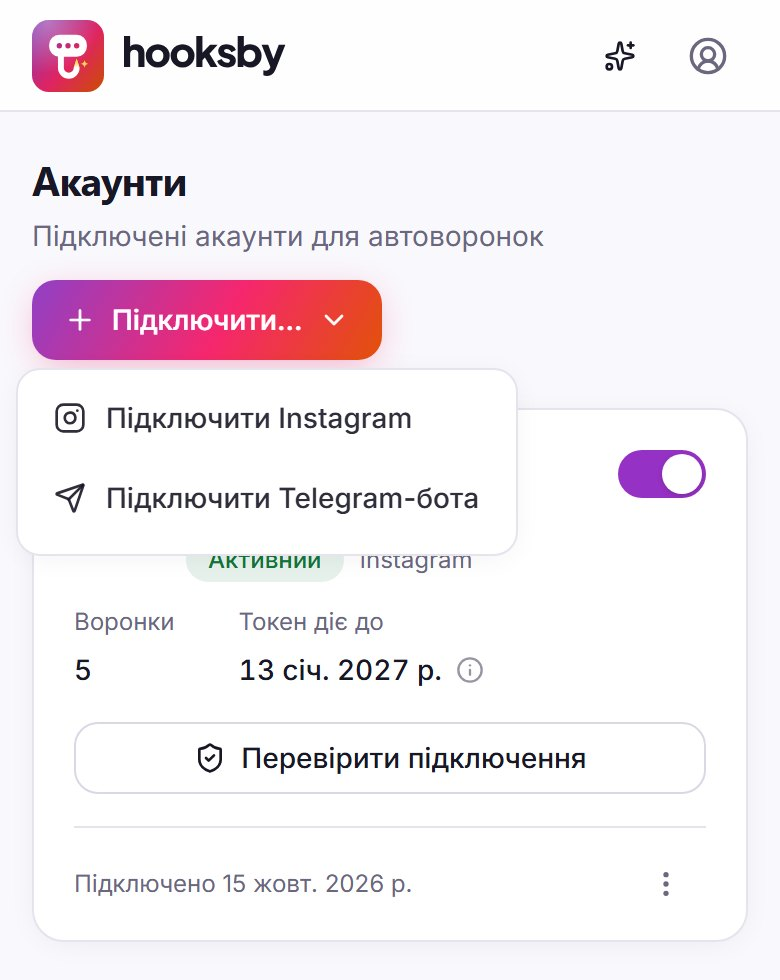
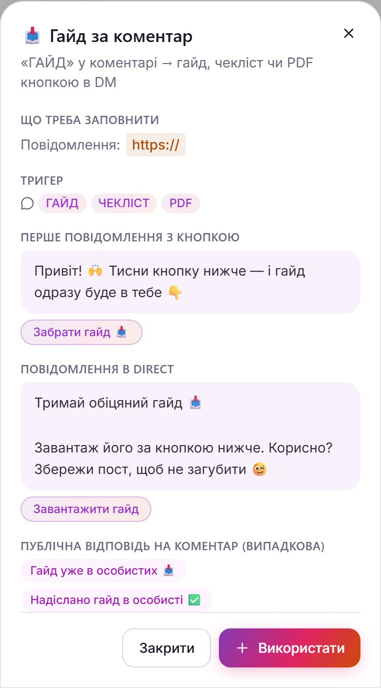
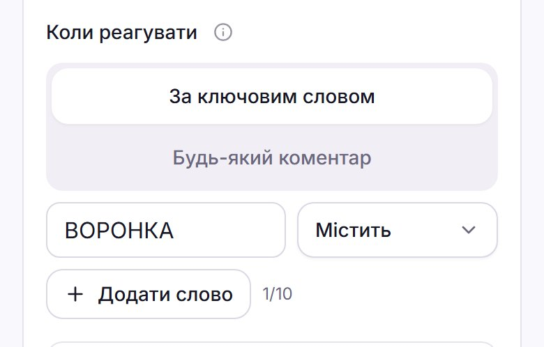
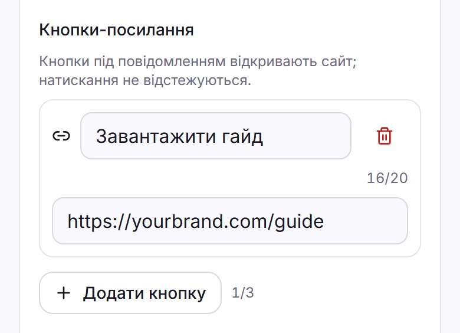
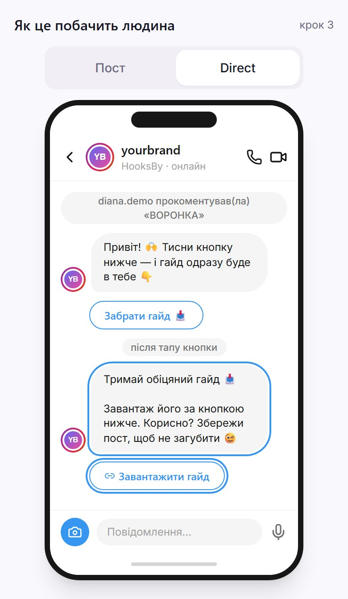
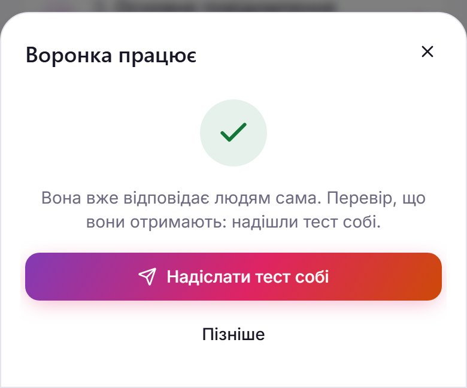

Перед стартом
Що знадобиться
Професійний InstagramТип акаунта «Автор» або «Бізнес». Особистий перемикається тут: Налаштування → Тип акаунта й інструменти.
Посилання на подарунокГайд у Google Диску, Notion чи PDF, прайс, запис на консультацію — будь-яке посилання.
ПоштаНа неї прийде код підтвердження. Картка для старту не потрібна.
Коротко
Увесь шлях
01
Зайди на hooksby.com
«Почати безкоштовно».
02
Створи акаунт
Пошта, пароль, код із листа.
03
Підключи Instagram
Офіційний вхід через Instagram.
04
Візьми шаблон
«Гайд за коментар» → «Використати».
05
Впиши своє слово
Наприклад, ВОРОНКА — і перевір, що спрацює.
06
Встав посилання
Замість «https://» — свій гайд.
07
Подивись прев'ю
Так людина побачить директ.
08
Запусти й перевір
«Запустити» → тест собі.
Покроково
Налаштування зі скрінами
Скріни з телефона. На компʼютері все те саме, просто меню зліва, а не внизу.

02
Створи акаунт
Зареєструватись
Впиши пошту й пароль (від 12 символів, можна фразою), постав галочку з умовами і натисни «Зареєструватись». Потім введи код із листа — без підтвердженої пошти Instagram не підключиться.
Безкоштовно: 1 Instagram, до 3 активних воронок і 500 спрацювань на місяць.

03
Підключи Instagram
Акаунти → Підключити… → Instagram
Унизу відкрий «Акаунти», натисни «Підключити…» → «Підключити Instagram». Instagram попросить увійти — це офіційний вхід, пароль HooksBy не бачить. Дозволь доступ, і акаунт зʼявиться зі статусом «Активний».

04
Візьми шаблон «Гайд за коментар»
Воронки → Шаблони
Унизу «Воронки» → «Шаблони». У розділі «Онлайн-школа / експерт» (або через пошук) відкрий «Гайд за коментар» і натисни «Використати». Тексти повідомлень уже написані — заміниш лише слово й посилання.

05
Впиши своє слово
1. Хтось коментує
Обери свій акаунт і «Коментар під постом»: на всі пости, один пост чи наступний, який опублікуєш. У «Коли реагувати» → «За ключовим словом» впиши своє слово, наприклад ВОРОНКА. Зайві слова шаблону прибери кошиком.
У полі «Перевір коментар» напиши, як написала б людина. Побачиш «Спрацює» — значить, усе правильно. Великі й малі літери не важливі.

06
Встав своє посилання
3. Основне повідомлення
У кроці «Основне повідомлення» в «Кнопки-посилання» заміни https:// на своє посилання: гайд, прайс чи запис. Напис на кнопці й текст повідомлення можна змінити під себе.

07
Подивись прев'ю
Як це побачить людина
Унизу форми — директ очима людини: спершу повідомлення з кнопкою, після тапу — твій гайд. Перемкни «Пост», щоб побачити публічну відповідь під коментарем.

08
Запусти й перевір
Запустити
Натисни «Запустити» вгорі. Зʼявиться «Воронка працює» — натисни «Надіслати тест собі» або напиши слово під своїм рілсом з іншого акаунта. Готово: тепер у описі рілса пиши «Напиши ВОРОНКА в коментарях — скину гайд».
Якщо щось не так
Швидкі фікси
Instagram просить логін і парольТак і має бути, навіть якщо в застосунку Instagram ти вже в акаунті. Забутий пароль відновлюється на сторінці входу Instagram.
Акаунт особистийПеремкни на «Автор» або «Бізнес»: Налаштування → Тип акаунта й інструменти. Потім підключи ще раз.
Директ не прийшовПеревір, що воронка «Активна», а в «Перевір коментар» твоє слово дає «Спрацює». Тестуй з іншого акаунта, не зі свого.
Хочу ще й підписниківШаблон «Безкоштовний гайд за підписку»: гайд отримують лише ті, хто на тебе підписався. Працює на тарифі Pro.
Профіль
Автор гайду
Diana | UGC & AI Creator
@diana.tsiolkovska
Твій UGC креатор з баченням майбутнього Туторіали по AI | Зйомка | Монтаж Portfolio & Collab ⤵️
diana-creator.site